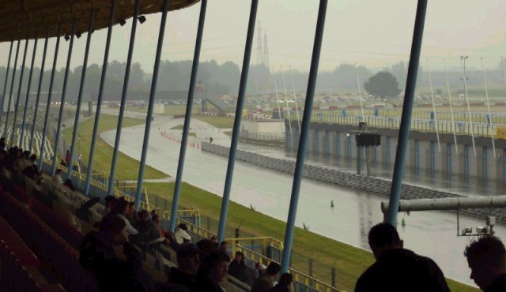
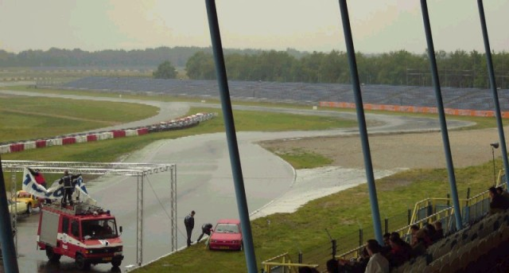
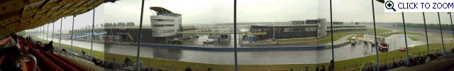
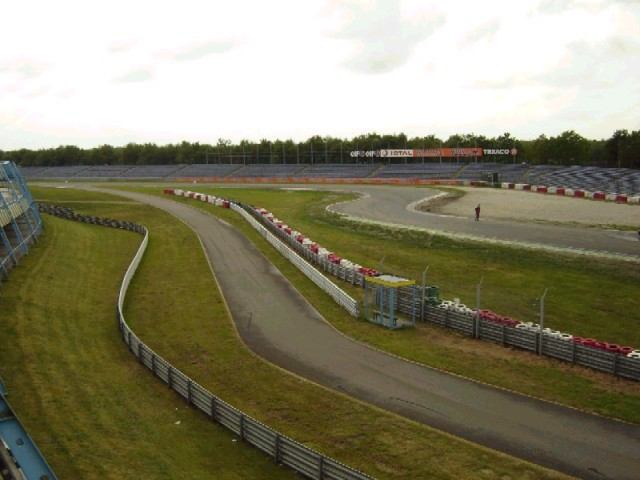
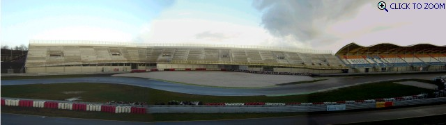
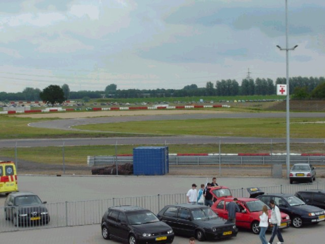
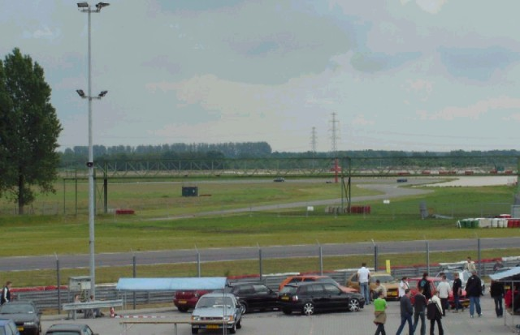

Numbers on the map represent the location where the photographs were taken. Click hyperlinks above to view the photographs.
Assen - Grandstand Views [Page 2 of 5]
Contents || Entrance & Pitlane | Grandstand Views | Paddock Views | Pre-1984 (Part A) | Pre-1984 (Part B) || Home
Numbers on the map represent the location where the photographs were taken. Click
hyperlinks above to view the photographs.

09 - Looking towards the S-bocht and the
Haar-bocht.

10 - The GT (Geert Timmer) Bocht.

P1 - Panorama taken from the Hoofdtribune. [Click to Zoom In - 248kb]

11 - The Geert Timmer bocht and the entrance
of the pitlane taken from the VIP boxes.

P2 - The new 'zwevende' (floating) tribune. [Click to Zoom In - 237kb]

12 - The strubben bocht.

13 - Looking in the direction of the
Ossebroeken bocht.
Return to racingcircuits.net's Photo Archive Main Index
©2003, 2004 & 2005 Roelard Smit. Reproduced here with kind permission.